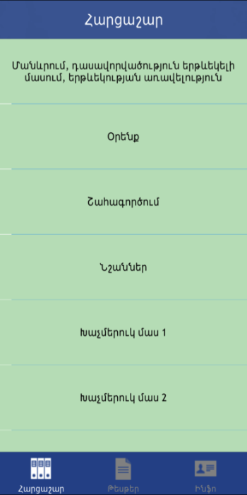
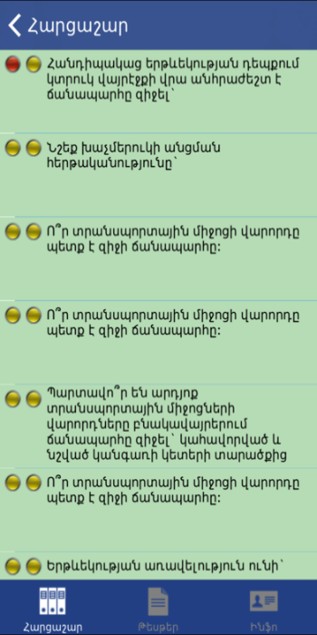
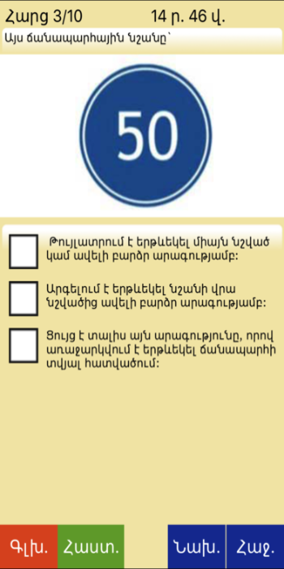
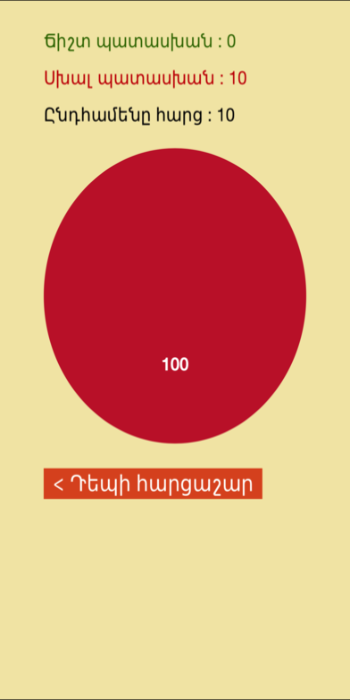

Varord
Prepare for Armenian Driving Theory exam !
The application will help you to get ready for the Armenian driving theory exam in a very short time.
Its categorized questionnaire provides robust mechanism for keeping track of the studied material.
Possibility for taking tests will prove your readiness for the real test.

VarordContact Us